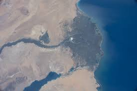
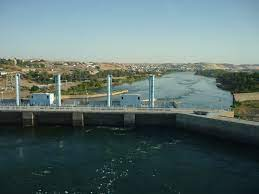

Géographie
Voici ici le chateau du Mont Sinai. Ce serait l'endroit ou Moise aurait reçu les 10 commandements de Dieu, selon la Bible. Ce chateau se trouve au Nord-est du pays et est dans la péninsule de Sinai.
Voici quelques photos de la plus longue rivière du monde: le Nil.
Cette rivière, qui se retrouve dans plusieurs différents climats vu sa grandeur, a toujours été la source du succès de l'agriculture et ainsi de la population qui le longe.
Le delta du Nil est l'endroit le plus fertile au pays. Il se trouve au Nord de la rivière au même nom et a été sa source primaire d'agriculture.
L'Égypte se retrouve aussi avec la côte de 2 facades maritimes: la mer Méditerranée et la Mer Rouge. C'est un pays au climat désertique qui est traversé par d'importants cours d'eau qui rendent possible une agriculture bien développée. Ses frontières touchent à celles de plusieurs autres pays tels que le Soudan, la Lybie, la Palestine ainsi qu'Israel. Sa capitale, le Caire, se trouve environ au Nord-est du pays et a une population d'environ 10 millions d'habitants.

Le canal de Suez est un canal créé par les humains pour des fins commerciales. Il relie la Mer Méditerranée et la Mer Rouge.
Le barrage d'Assouan est un barrage hydro-électrique qui est basé sur le Nil. Il permet de distribuer correctement l'eau pour la population ainsi que pour l'agriculture et sert aussi à créer de l'électricité.
